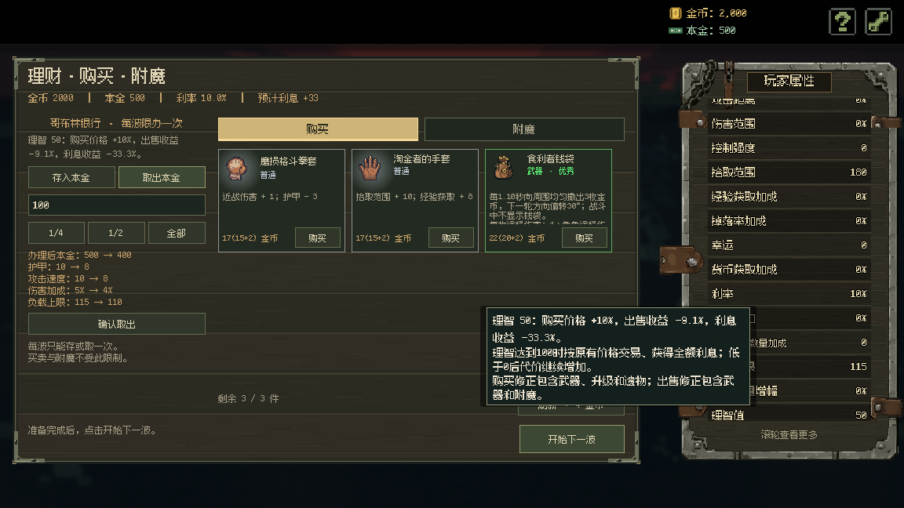
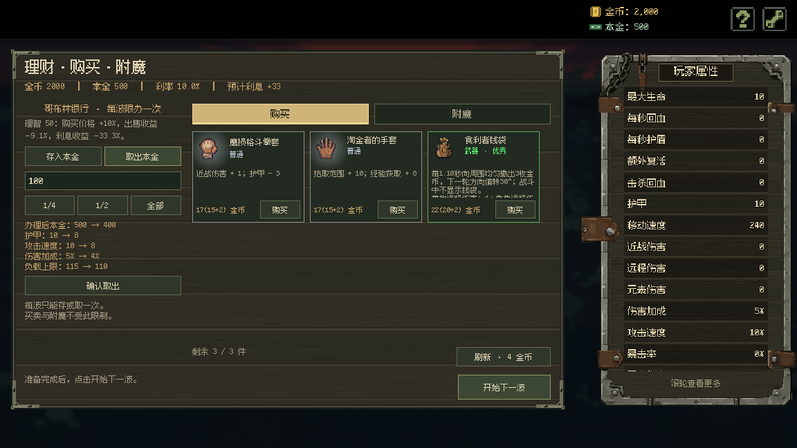
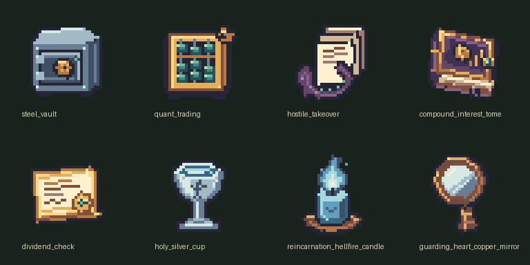

原生 32×32 透明像素图；沿用项目已有的手工像素绘制流程。五件遗物及图标均已按确认数值接入，均限持1件。
通用伤害+25%；理智−20
利率+4个百分点；每波结束理智−3
通用伤害+35%；每波结束理智−2，触发前理智低于0时改为−5
每次成功结息：通用伤害+1%，理智−2
每波结束理智+2；通用伤害−8%
五件均已采用卡片所示数值。失控增幅器按波末触发前的理智判断扣减，清醒誓言的恢复受轮回业火之烛限制。数值对照属于独立经济模型，仍需结合实战验证。完整机制与平衡建议 · 经济对照原始结果 · 图标清单与设计说明



 32px 原寸64px 放大
32px 原寸64px 放大